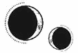

CAPÍTULO 48
Ener 1787
Cuando Kaine dejó de llorar, Helena se apartó para observarlo con detenimiento.
Su expresión se había vuelto cauta y agriada, como si el llanto hubiera borrado toda su ternura y, en su lugar, solo quedara el veneno.
Helena sabía que lo tenía bajo control. Había cumplido con las órdenes que le dieron y, aun así, no estaba segura de cómo demostrarlo, de cómo poner a prueba su lealtad de una forma tangible.
Ilva no le daría crédito a lo que Helena sentía. Que Kaine se preocupara por ella no era lo mismo que tenerlo atado como un perro, y eso era justo lo que Ilva había pedido.
—Si de verdad quieres que gane la Llama Eterna, ¿por qué continúas ascendiendo de rango? ¿Qué pretendes hacer? —preguntó.
Los ojos de Kaine eran como un espejo, en ellos podía verse reflejada hasta la más mínima expresión. Él hizo un gesto burlón. De no ser porque su rostro aún estaba humedecido, jamás habría dicho que había estado llorando.
—Siempre supe que el único motivo por el que aceptasteis mi oferta era porque estabais desesperados. La Llama Eterna afirma ser una organización respetable, pero Crowther es una serpiente. Y da igual lo que prometa Ilva Holdfast, al final no es más que la mano derecha del principado, y encima un lapsus. Sabe perfectamente que, si ganan, la Llama Eterna decidirá cuáles de sus acciones son legítimas y cuáles no, y las que no gusten a los Holdfast desaparecerán en el viento. Di por hecho que, una vez que dejase de ser útil, pondríais en riesgo mi tapadera para aprovecharos de la inestabilidad que causaría la traición. —Enseñó los dientes—. Así que he intentado llegar lo más alto posible, para que las consecuencias sean mucho más devastadoras.
Helena frunció el ceño sin apartar la mirada. Aquello le resultaba demasiado generoso por su parte. Aunque quisiera vengar a su madre, Kaine no sentía ningún aprecio por la Llama Eterna. Para él, no eran más que un medio para conseguir un fin.
—¿Por qué me has besado? —preguntó de repente—. ¿De qué ha servido… todo esto?
Helena bajó la vista, sin estar segura de qué responder.
—Yo no sabía que debías morir una vez que retomaron los puertos. Por lo visto, era algo evidente, pero no caí en la cuenta.
Kaine soltó una carcajada amarga, pero ella no fue capaz de mirarlo a los ojos cuando volvió a hablar.
—Creían que morirías por el sello de la espalda. De hecho, lo estaban… esperando. Cuando supieron que habías subido de rango, dieron por sentado que habías estado enfrentando a un bando contra otro para ser el único que resultara victorioso cuando todo terminara.
—¿Y tú también lo crees? —le preguntó en voz baja. Helena tragó saliva, todavía incapaz de mirarlo a los ojos.
—No, pero da igual lo que yo piense. Justo antes del solsticio, me dijeron que tenía un mes para conseguir que te arrastraras o matarte. Si no, Morrough se encargaría de ello.
Kaine volvió a reírse.
—Me queda una semana, por lo que veo. Entonces ¿esto era un polvo de despedida? ¿El último pago por los servicios prestados?
Helena sintió un escalofrío por todo el cuerpo.
—No. Yo… solo quería… —Sintió que se le formaba un nudo en la garganta. Lo agarró por la camisa, con ganas de sacudirlo. Odiaba la forma en que cambiaba de personalidad. Pasaba de mostrarse vulnerable a tener una actitud cruel en cuestión de segundos—. Solo tengo que demostrar que harás lo que yo te pida. Si lo consigo…, no te matarán.
Lo miró desesperada. Él arqueó las cejas con sorna.
—¿En serio? ¿Eso es todo? Si les sirvo, podré seguir existiendo tan tranquilamente como hasta ahora, siempre que les sea más útil vivo que muerto, ¿no? Qué oferta más generosa. ¿Cómo podría rechazarla?
Helena lo soltó y se rio con algo de amargura.
Kaine no quería que lo salvaran. Ella solo había empeorado las cosas, y solo porque Ilva y Crowther no le habían contado la verdad. Le habían hecho creer que todo era real, pero en el fondo no importaba; nunca importó lo que ella creyera o dejara de creer… porque Kaine siempre lo había sabido.
Respiró hondo para aclarar sus pensamientos, pero su mente se resistía a asimilar la realidad. No podía acabar así. Había hecho lo que le habían pedido. Había cumplido con las órdenes. No debería tener que tomar esta decisión.
—He… he seguido las órdenes. No puedo elegirte a ti. Está en juego la vida de mucha gente —confesó con la voz temblorosa.
—Lo sé.
Helena abrió y cerró la boca, pero no podía añadir nada más.
—De acuerdo —aceptó al cabo de un rato con tono distante. Sentía como si la hubiesen apuñalado; la cruda realidad era como una daga de acero clavada en el corazón—. ¿Quieres…? —Le falló la voz—. ¿Quieres que lo haga yo? ¿O… te da igual?
Sabía que Ilva querría recuperar la gema, si es que eso aún era posible, pero a Helena ya le daba absolutamente igual.
Kaine soltó un bufido.
—Has perdido la oportunidad.
Helena tragó saliva varias veces hasta reunir el valor necesario para hablar.
—Lo siento.
Él no respondió. Sus ojos no mostraban ni una pizca de arrepentimiento, solo una cruel satisfacción.
Helena sentía que el aire desaparecía de la habitación. Por más que tratara de respirar, ya no quedaba oxígeno. Oía un pitido resonando en sus oídos. Buscó a ciegas su bolsa e intentó recordar dónde la había dejado. Con un movimiento titubeante, se puso de rodillas, pero su mente se negaba a funcionar.
—¿Y qué pasará contigo?
La chica parpadeó.
—¿Conmigo?
—Sí. —Kaine se inclinó hacia delante y le sostuvo la barbilla de manera que la luz de la ventana iluminó su rostro con un pálido rayo del sol de invierno—. ¿Qué pasará contigo?
—¿Cuando… tú ya no estés?
Kaine asintió.
—No lo sé —respondió con una carcajada nerviosa, y se apartó—. Como bien dijiste, siempre he sido prescindible, así que tal vez me ofrezcan al siguiente espía.
—No bromees con eso. Quiero una respuesta sincera —expresó con un deje mordaz en la voz. Helena lo miró a los ojos.
—Te prometí que sería tuya. Me obligaste a prometerlo. No he hecho más planes.
La rabia se dibujó en su rostro.
—Ahora que voy a morir, seguro que tienes ganas de hacer otras cosas.
Helena le acarició con los dedos ahí donde estaba el corazón.
—No, estoy… agotada.
Al ponerse en pie, recordó a Luc en lo alto de la Torre de Alquimia, demasiado cerca del borde. En aquel momento, no entendió por qué estaba allí, cómo era posible que ni ella ni las demás personas que lo necesitaban fueran suficientes para darle ganas de vivir. Ahora, ese mismo abismo parecía llamarla, un abismo que se abriría tan pronto como tomara esta decisión.
Todo le daba vueltas. No podía concentrarse, porque lo único que escuchaba era el latido de su propio corazón.
«Todo el que te toca muere».
—¿Qué es lo que quieren? —preguntó Kaine en un susurro. Helena lo miró.
—¿Cómo?
—¿Lo de… arrastrarse es algo literal o Ilva tiene algo más constructivo en mente?
Helena notó un nudo en la garganta.
—T-tendría que preguntar.
—Descúbrelo. Lo haré. —Parecía exhausto, pero algo ardía en su interior.
—¿Lo dices en serio? —preguntó Helena, aunque estaba segura de que había gato encerrado. Kaine no respondió—. ¿Por qué te estás ofreciendo? —insistió alzando la voz con un matiz de histeria.
Él la miró durante unos instantes.
—Acabo de caer en la cuenta de algo que he pasado por alto. Hasta ahora no había caído en que te he convertido en una baza a mi favor.
Las palabras le golpearon como una patada en el pecho.
—Ah.
Crowther tenía razón desde el principio: los Ferron eran tan posesivos que preferían devorarse a sí mismos antes que renunciar a algo que consideraban suyo.
—Te traeré la respuesta —respondió Helena.
Kaine se limitó a asentir y apartó la mirada. No dijo nada mientras Helena se ponía la capa, cubriendo la ropa hecha jirones, y cogía su bolsa para marcharse.
Cuando llegó a la puerta, se percató de que hacía un movimiento con la mano, pero, al girarse por última vez, Kaine apartó la vista y apoyó su espalda contra la pared. Se quedó con la mirada perdida, tan pálido que podría haber sido un fantasma.
Al salir del módulo, la recibió un chaparrón. Helena se quedó bajo el agua y trató de recobrar la compostura, aunque no respiraba con dificultad. Estaba al borde del abismo; aún sentía la caída que le esperaba si daba un mal paso.
A pesar de tener la capucha puesta cuando pasó por el puesto de control, los guardias la reconocieron rápidamente y no le hicieron el chequeo. Era un fallo de seguridad, pero lo agradeció. Se desvió de su ruta habitual y se dirigió al punto de encuentro. No podía aparecer por el Cuartel General con esas pintas.
Conforme se acercaba, la devastación de la guerra se hacía patente, igual que ocurría en todos los rincones de la ciudad. Los muros estaban calcinados, deformados por el combate.
El piso franco no era más que un almacén en un sótano.
Al cerrar la puerta tras de sí, notó que sus manos estaban rígidas. No podía dejar de temblar, así que, nada más entrar, encendió un fuego en el hornillo portátil empleando un montón de pedazos de leña y periódicos viejos que había por allí.
Se esforzaba por avivar las llamas, deseando que sus conocimientos de piromancia fueran algo más que teoría, cuando se abrió la puerta. Se giró rápidamente con la esperanza de que no fuera Ivy, aunque si se tratase de un desconocido, sería peor.
Era Crowther. Se detuvo con gesto contrariado.
Helena volvió a mirar el fuego.
—¿Estás herida?
La chica negó con la cabeza, y Crowther la apartó de un leve codazo.
Con solo chasquear los dedos, las llamas se avivaron y la madera crujió y prendió con fuerza. Helena extendió las manos sobre las llamas sin decir nada. Crowther se dirigió a la habitación contigua y volvió con una toalla. Helena la aceptó en silencio y se frotó el rostro hasta que dejó de gotearle el pelo. Sentía sus ojos clavados en ella.
—¿Está hecho? —le preguntó en cuanto Helena dejó la toalla sobre su regazo y volvió a extender las manos sobre el fuego.
Notó que se le formaba un nudo en la garganta, pero, tras un instante de duda, asintió.
—Sí, lo he hecho.
Crowther exhaló un suspiro de alivio y le dio una suave palmada en el hombro.
—Dale el talismán a Ilva.
Helena siguió contemplando el fuego.
—Decía la verdad cuando dijo que quería vengar a su madre.
Crowther suspiró, pero Helena continuó hablando:
—Cuando arrestaron a Atreus, Kaine estaba a salvo en la Academia, pero su madre no. Ya sabes que la vivemancia no siempre deja marcas visibles. Kaine mató al principado Apollo porque era la única forma de salvarla, pero ella nunca se recuperó. Cuando se sufre un estrés prolongado, este puede ocasionar daños en el corazón.
Se produjo un silencio tenso, cargado por el escepticismo de Crowther. Helena no apartó la vista del fuego. Sentía un calor abrasador, pero no retiró las manos. Si se quemaba, tal vez dejase de sentir también el resto del cuerpo.
—De niño, Atreus le hizo prometer a Kaine que cuidaría de su madre, ya que lo culpaba por lo enfermiza que se volvió Enid después del parto. Sin embargo, ella se negó a abandonar Paladia y, al final, la tortura acabó con ella. Murió en casa, pero su muerte no tuvo nada de natural.
No se oía más que el crepitar del fuego.
Era posible que Crowther ya supiera todo eso. Helena no era consciente aún de cuánto le habían mentido él e Ilva; habían decidido contarle que la motivación de Kaine se basaba en el poder porque querían que Helena lo percibiera de esa forma.
Cerró los ojos y deseó desplomarse en el suelo.
—Quiere saber qué queréis. Ilva y tú. Qué prueba de lealtad estáis exigiendo.
Hubo un cambio en el ambiente. Crowther apretó el hombro de Helena y la obligó a levantarse y a mirarlo. Sus ojos la recorrieron de arriba abajo y se detuvieron en algunos detalles al hacerlo.
—¿Qué has hecho? —preguntó al fin.
Helena lo miró a los ojos con la barbilla levantada.
—He cumplido mi misión. Ahora me es leal.
Estaba acostumbrada a que Crowther se mostrara siempre impasible, pero ahora parecía que lo había alcanzado un rayo. Sin mediar palabra, la empujó hacia la ventana, donde había más luz, y le retiró la capa para verla mejor.
Sus trenzas estaban deshechas, con mechones sueltos en todas direcciones. Crowther deslizó los dedos por su cuello y acarició un punto que hizo que ella torciera el gesto de dolor. Antes de que pudiera reaccionar, desanudó el cierre de su capa; empapada por la lluvia, esta resbaló de sus hombros y cayó al suelo con un sonido húmedo y denso. Quedaron al descubierto sus ropas hechas jirones y los moratones que le salían en los entrenamientos, que normalmente se curaba antes de volver.
Helena dio un paso hacia atrás y se encogió entre las sombras. Quiso decir que no era lo que parecía, pero dudaba que la fuera a creer.
—Estoy bien —afirmó, aunque le temblaba la voz—. Tan solo he venido a asearme. Me dijiste que no volviera al Cuartel General con este aspecto.
Crowther frunció los labios hasta convertirlos en una línea tensa y, aunque parecía a punto de replicar, volvió a observarla de arriba abajo y decidió soltarla.
Helena se apartó de un tirón y hundió los hombros. La habitación contigua era un baño, y ella se encerró dentro y contempló su reflejo en el espejo: tenía la piel de un gris macilento, pero sus labios estaban rojos e hinchados. El pelo parecía el nido de un pájaro, y la lluvia solo lo había empeorado.
Apartó la vista y buscó un paño, cualquier cosa con la que asearse. Se quitó la ropa interior y la frotó con fuerza, para intentar que quedara limpia. La humedad fría y punzante que sentía entre las piernas estaba empezando a ponerla histérica.
Las manos le temblaban cuando tiró el paño en una papelera que había debajo del lavabo, y así siguieron mientras se deshacía de las horquillas que tenía enredadas en el cabello.
Empezó a trenzarse el pelo, aunque le ardían los ojos y le temblaba el labio. Se le estremecían tanto las manos que no consiguió estabilizar su resonancia, así que dejó los moratones tal como estaban.
«Cálmate. Solo tienes una oportunidad para convencer a Crowther».
Sin embargo, cuanto más lo pensaba, más se alteraba su respiración. Se acuclilló, cubriéndose el rostro con las manos hasta que recuperó el control.
Al alzar la vista, volvió a mirar su reflejo. Estaba más delgada que la primavera pasada, cuando vio a Kaine por primera vez. Las mejillas se le habían hundido, dos surcos de agotamiento le marcaban la mirada, y se le notaban demasiado las clavículas. El estrés le había dejado rastro, como una corriente de agua atravesando la arena.
Rebuscó en su bolsa y encontró un bálsamo para los moratones que se aplicó en los labios. Para entonces ya había recuperado el pulso suficiente como para eliminar las marcas con una pizca de resonancia, aunque aquello le borró también el leve rubor de su piel.
Se puso una falda limpia y salió del baño. Todo estaba en silencio.
—Crowther —lo llamó con voz hueca. No obtuvo respuesta.
Fue a la habitación principal; el fuego se había reducido a unas ascuas, y Crowther había desaparecido.
Tragó saliva e intentó no romperse. Por supuesto que se había marchado. No pensaba escucharla. Nadie lo haría. Habría cogido aquello que había venido a buscar y se había ido.
Sintió cómo un pozo de desesperación se le abría en el estómago.
«El plan siempre fue que fracasaras».
La habitación pareció estirarse cuando quiso dirigirse hacia la puerta. Le temblaban demasiado las manos para girar el pomo.
Entonces se abrió, y Crowther volvió a entrar. Estaba chorreando, con el pelo fino pegado al cuero cabelludo. Parecía un gato mojado.
—¿Qué estás haciendo? —le espetó cuando cruzó el umbral—. Siéntate.
Llevaba un paquete de papel en las manos, aunque ya se estaba deshaciendo por culpa de la lluvia. Lo abrió y sacó varios frascos.
—No sabía qué necesitarías —explicó.
Helena contempló los frascos. Debía de haber regresado al Cuartel General y pasado por el hospital. En el punto de encuentro solo había suministros médicos básicos, pero nada de valor o que pudiera escasear. Reconoció su propia letra en las etiquetas.
Al leerlas, se planteó tomar láudano, algo que calmara la nitidez de sus emociones, pero tenía que mantener la cabeza fría. Evaluó la siguiente opción: un anticonceptivo.
—Sabes que no lo necesito —afirmó, y lo dejó en su sitio al tiempo que tragaba saliva.
Lo único útil que había traído era una tintura de valeriana, de las que el hospital empleaba para calmar a los pacientes en estado de shock.
—¿Qué ha pasado? —preguntó Crowther mientras Helena abría el frasco y lo bebía de un trago.
—Ya sabes lo que ha pasado —repuso—. Lo que querías que sucediera cuando me mandaste allí. Simplemente voy un poco lenta.
—Marino. —Había empleado un tono cortante, pero pareció arrepentirse, porque enseguida su voz se suavizó—: ¿Qué ha pasado?
Helena tenía pensado presentarse en el Cuartel General y dar parte sin explicaciones sobre por qué o cómo, mostrarse tranquila y decidida, pero Crowther la había pillado antes de tiempo. Empezó a temblarle la mandíbula.
Se sentía usada. Y, en el fondo, entendía que así era como debía ser. La guerra estaba por encima de las personas. Incluso Luc era solo una figura simbólica, una idea más grande que sí mismo, con independencia de la veracidad de su linaje.
Ella lo sabía y estaba dispuesta a cumplir órdenes. Era consciente de las consecuencias y entendía el sacrificio. No necesitaba que le prometieran nada a cambio; ni recompensas, ni reconocimiento, ni la vida eterna. Hacía lo que había que hacer porque era necesario. Sus superiores lo sabían y, aun así, le habían mentido.
—Le dije a Ilva que únicamente necesitaba más tiempo —se limitó a decir—. Solo ha sido algo… abrupto. Estábamos entrenando. De ahí los moratones.
Crowther no dijo nada, pero Helena notaba su mirada fija, como la de un halcón. Le hubiera gustado saber de qué se estaba dando cuenta, qué estaba analizando de su comportamiento mientras la observaba con tanta atención.
Helena se llevó la mano al esternón y extendió el calor desde la palma de la mano por todo el cuerpo, para así poder dirigirse a Crowther con calma. Era la única forma de que la creyese sin considerarla una histérica.
—Cuando me lo confesó todo, estaba muy alterado. Empezó a llorar después de contarme lo de su madre. Siempre supo que lo ibais a traicionar. Era parte de su plan. Por eso ha subido de rango; imaginó que, cuanto más importante fuera, mayor sería el golpe… cuando muriera.
Le siguió un largo silencio, interrumpido por un suspiro grave de Crowther que hizo que a Helena le latiera fuerte el corazón.
—Si es un mártir tan suicida, ¿por qué quiere cooperar ahora?
Notó que se le cerraba la garganta. Retorció la tela suelta de su falda entre los dedos.
—Bueno, ya no puede negar la obsesión que siente. Creo que no sabe cómo dejarme ir. Tenías razón: los Ferron son posesivos de una forma autodestructiva. Y el sello de la espalda ha agravado esa característica. Me considera una… —tragó saliva— posesión. Creo que eso es lo que ha cambiado. No le importa sobrevivir o no, simplemente no sabe cómo dejarme marchar.
Crowther frunció los labios y se los acarició con el pulgar mientras reflexionaba. Helena lo observó mientras sus propios dedos se retorcían y apretaban hasta que los nudillos quedaron alineados.
—¿Puedes… puedes decírselo a Ilva? Sé que los dos pensáis que me he involucrado demasiado, pero he hecho lo que me pedisteis. Kaine dice que hará lo que queráis. Lo he hecho… He logrado que…
La voz se le quebró y empezó a temblar sin control. Se sujetó el brazo y empleó la resonancia para forzar el efecto de la valeriana. Necesitaba calmarse.
—Sí —accedió Crowther—. Hablaré con Ilva. Has… has hecho lo que te pedimos —carraspeó—. Si Ferron está dispuesto a demostrarlo, eso cambia las cosas.
Helena asintió y miró a su alrededor sin ver nada. No sentía alivio.
—Gracias.
Se dirigió hacia la puerta, aunque no sabía adónde ir. Estaba demasiado alterada para regresar al Cuartel General, pero tampoco podía permanecer ahí.
—Marino.
Helena se encogió. Crowther seguía observándola. La miraba de una forma extraña, como si estuviera viendo más de lo que ella habría querido revelar. El hombre tragó saliva un par de veces y juntó las yemas de los dedos.
—Yo tenía la misma edad que tú cuando los Holdfast me trajeron a Paladia.
Ella dio un paso hacia atrás. Sabía que Crowther había sido uno de los alumnos becados por los Holdfast. Había llegado a Paladia siendo huérfano, rescatado por ellos. Helena nunca se había planteado que sus historias pudieran parecerse.
—Mi familia y todo mi pueblo fueron masacrados por un nigromante. Se alzaron del suelo y me dejaron atrás, en la nieve, para que muriera. Cuando llegó la Llama Eterna, ya no había salvación posible, salvo prender fuego a la aberración en la que se habían convertido. Yo me aseguré de distinguirme mostrando que estaba dispuesto a hacer lo que fuera necesario. Nunca quise la gloria ni me interesaba la Fe, simplemente sabía que alguien tenía que detener la putrefacción. Jamás me he arrepentido de mi decisión.
Se miró la mano derecha, la abrió y cerró con lentitud. Era más pequeña que la otra; los músculos se habían atrofiado con el paso de los años. Guardó silencio durante tanto tiempo que Helena acabó por comprender que aquel relato era como una disculpa velada y que, de algún modo, Crowther la veía ahora como una igual. Helena había hecho algo por él y ahora se arrepentía de haberla tratado con tanta condescendencia.
Pero Helena no quería una disculpa.
—¿Estás…? —Parpadeó y volvió a empezar—: ¿Necesitas… que alguien te cure?
Ella se puso en tensión. Lo último que quería era tener a Elain o a Ivy cerca.
—No ha sido violento —puntualizó. Se cruzó de brazos con fuerza. Su voz sonaba tan contenida que se obligó a calmarse—. Solo fue algo… abrupto. Además —permitió que el veneno impregnara su voz—, sanarme sola formaba parte de las instrucciones que me diste desde el principio, ¿no?
Crowther apartó al vista.
—Si necesitas permiso para algo, te lo firmaré.
—Solo he venido a peinarme y a cambiarme de camisa. No estaba herida —replicó Helena, cada vez más enfadada por esa muestra de preocupación repentina tan tardía.
Le habían dejado claro que estaba sola en esto, pero ahora que había descubierto la trampa, ahora que sabía que la habían vendido sin pensárselo dos veces y para toda la vida, ¿creían que necesitaba su preocupación?
Un calor nauseabundo bullía en el fondo de su estómago. Solo de pensar en lo absurdas que sonaban sus palabras, se le escapó un sollozo a medio camino entre la pena y la risa. Crowther pareció enfadarse.
—No tuvimos tiempo de prepararte para la misión. Creímos que lo mejor era dejar que el trato siguiera su curso y… arreglar las consecuencias después. Así resultarías más convincente.
Se le hizo un nudo en la garganta.
—Bueno, Kaine os caló desde el principio. Al final, la única idiota he sido yo. Pero ya tenéis lo que queríais. Supongo que ha sido una suerte.
—Tienes que… —empezó con pesar, pero se calló.
—¿Qué? —insistió Helena. La furia que sentía estaba dando paso al pánico.
¿Acaso no era suficiente? ¿Estaba intentando decirle con delicadeza que Ilva pensaba matar a Kaine igualmente? ¿Que ese último mes también había sido una mentira? ¿Que, por mucho que hiciese, Kaine no podía evitar que lo traicionaran?
Crowther la observó con el entrecejo fruncido.
—He pasado un año intentando encontrar la forma de reemplazarte… Tengo que admitir que eres la integrante más excepcional de la Llama Eterna. Y, por ello, te pido disculpas.
Ahora que conocía el método que usaban los Holdfast a la hora de elegir a sus «prodigios», sí que veía el paralelismo entre ambos: los dos habían venido a Paladia por su talento, sin tener ningún otro sitio al que ir, y habían dedicado su vida a estar solos y ser útiles, porque eso era lo único que conocían.
Tal vez, si ahora la consideraba su sucesora, sí que le parecía una tragedia.
Una semana después, Crowther acompañó a Helena al Reducto.
Tras aquel breve interludio de humanidad, el hombre volvió a retirarse a la sombra y, cuando emergió de nuevo, era el mismo de siempre. Aun así, Helena se percató de que después de los últimos acontecimientos su estatus dentro la estrategia había cambiado.
Durante el trayecto, no le dirigió la palabra. Tomaron un camión hasta la barricada y luego caminaron hasta el Reducto. Era desconcertante lo rápido que se hacía el viaje cuando no iba a pie. Había luz, y caía una llovizna que cubría la ciudad como un sudario. Una neblina espesa lo envolvía todo alrededor de la presa.
Los necrómatas del Reducto se esfumaron entre la lluvia al verlos pasar.
Kaine los esperaba en el módulo, como si no se hubiera marchado nunca. Estaba demacrado, cansado. No la miró a los ojos. De hecho, apenas le dedicó un vistazo. La tela que antes cubría el suelo estaba doblada en un rincón.
Si Crowther tuvo alguna impresión del lugar, no la dejó entrever, aunque Helena advirtió cierta incomodidad cuando sus ojos recorrieron la estancia. Ella ya se habría acostumbrado, pero en ese momento solo vio la suciedad, la pintura descascarillada y los azulejos resquebrajados. Se acordó de lo denigrante que le había parecido aquel lugar la primera vez que entró en él.
Crowther observó todo sin decir nada, y el aire se volvió cada vez más tenso, como un bosque que se sume en el silencio de repente.
Aunque hacía años que no participaba en ninguna batalla, Helena había sanado a suficientes víctimas de sus interrogatorios para saber que Crowther tenía la capacidad de usar la piromancia de forma precisa, y ahora tenía dos manos con las que emplearla. No sabía con certeza hasta dónde llegaban las habilidades de Kaine, pero incluso los inmarcesibles temían enfrentarse con los alquimistas de fuego.
El odio entre Crowther y Kaine era tan denso que hasta el aire parecía vibrar en su presencia. Fue Crowther quien habló primero, y cuando lo hizo le brillaban los ojos.
—Tengo entendido que quieres renegociar tu trato con la Llama Eterna, Ferron. —Había cierta burla en su voz.
Kaine se había quedado sorprendentemente pálido.
—Eso parece.
Helena había supuesto que tendría que mediar entre ellos, pero Kaine la fulminó con la mirada.
—Puedes marcharte, Marino. Estoy seguro de que Crowther sabrá volver solo.
Ella vaciló y miró a ambos hombres alternativamente. A Crowther se le iluminó el rostro con diversión cuando posó la vista en Helena.
—No me apetece volver caminando solo. Espérame fuera, Marino. Estoy convencido de que Ferron no permitirá que te suceda nada en el descansillo.
Kaine apretó los dientes, pero no replicó. Helena les dedicó una última mirada a los dos y se dio la vuelta a regañadientes. Al salir al rellano, antes de cerrar la puerta, oyó una sola palabra de los labios de Crowther:
—Suplícamelo.
Se paseó por el pasillo, inquieta, y se asomó a los módulos que carecían de puerta. Eran todos iguales. Subió a la planta de arriba y volvió a bajar.
La lluvia caía por el tragaluz desprovisto de cristal como una cascada infinita. En la segunda planta, algo escondido entre las sombras le llamó la atención. Se acercó, se puso de puntillas y entrecerró los ojos para ver mejor lo que era. Lo habían colocado de tal forma que apenas se distinguía en la oscuridad.
Era un ojo humano metido en una caja de cristal. La estaba mirando. Cuando ella se movía, giraba y la seguía.
Helena se estremeció. No sabía que se podía reanimar solo una parte del cuerpo, pero era evidente que ese ojo había cobrado vida. Estaba perfectamente conservado y había sido colocado en ángulo para que vigilase todo el rellano desde el rincón.
Así era como Kaine siempre se enteraba de que había llegado.
Estuvo media hora más sentada en los escalones hasta que Crowther salió del módulo. Sabía que probablemente no le contaría los detalles del trato, pero confiaba en que, después de hacerla esperar, al menos le diría algo.
Sin embargo, el hombre se detuvo y la miró de arriba abajo.
—Buen trabajo, Marino.